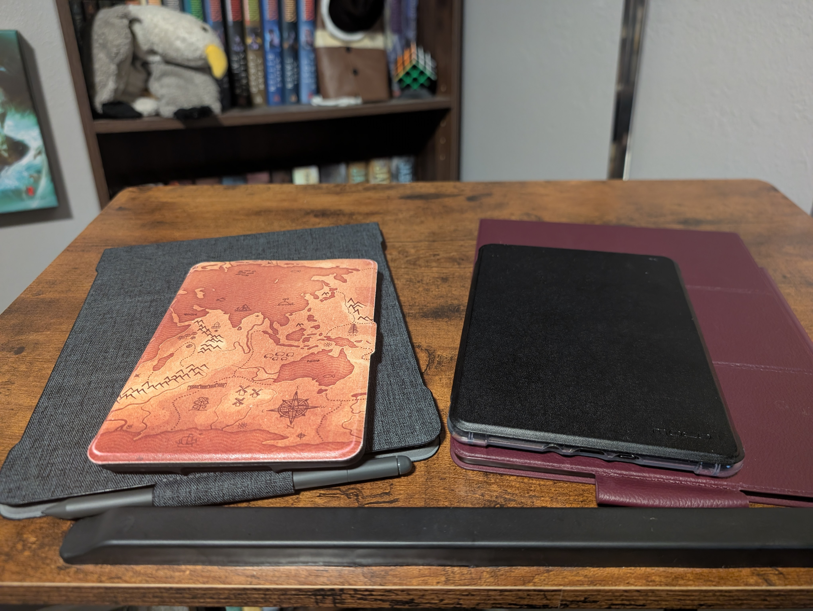
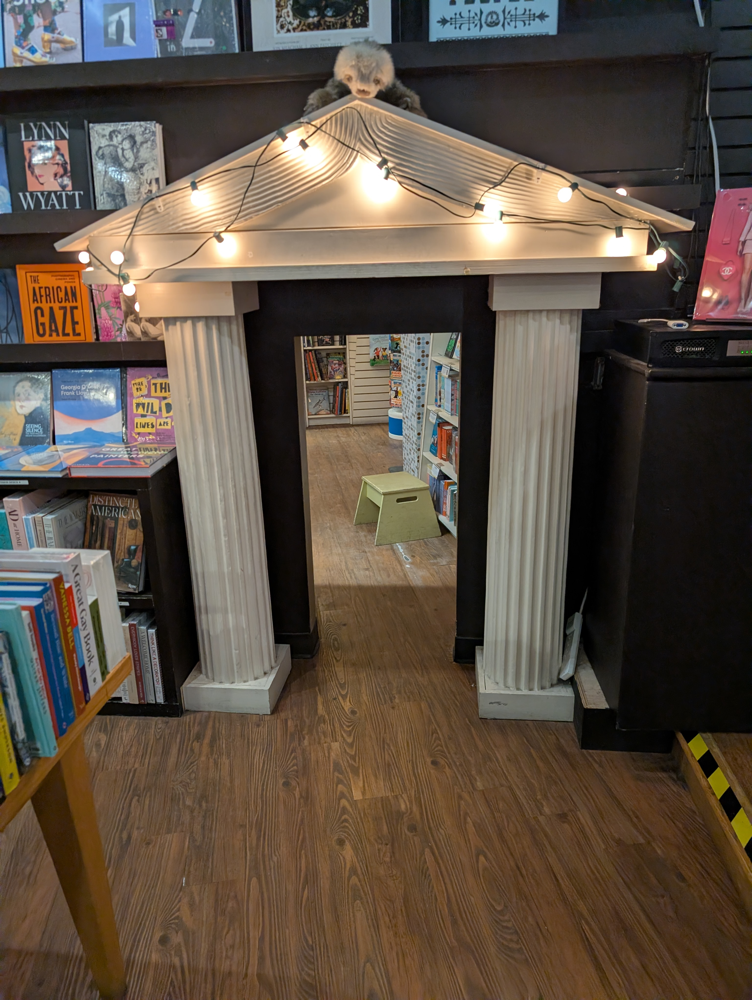

Publishing makes stories accessible to the world. Stories and history are the bedrock of creativity and sharing is at the center of it all. Digital publishing has helped make books more accessible, and even I partake in it.
Pictured are my:

But what of the smaller brick and mortar heroes? Independent bookstores are not as common as they once were in the competitive industry. Yet, Parnassus Books thrives.
This is what makes publishing significant to me. A place built on stories. Places where you can still feel the love of books. It’s a place an adult can browse for hours, or a child can get lost in their imagination, with some help.

Recreating this feeling of joy in books, this care, is what I hope to balance in digital publishing. I want to help publishing keep this piece of its soul, its love of story, and the feeling of getting lost in imagination.
I added a guide for adding figures to the class discussion document.